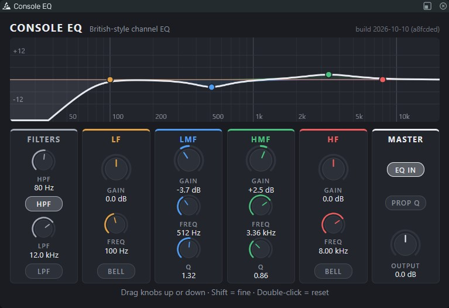

WebCLAP Plugins
Ilmaisia plugareita, jotka toimivat selaimessa, esimerkiksi openDAW:ssa
Plugin-efektit
Console EQ
Kanavakohtainen taajuuskorjain brittiläisten miksaustiskien tyyliin ("British EQ"): yli- ja alipäästösuotimet (HPF ja LPF), matalien ja korkeiden taajuuksien kaistat, joissa voi valita hylly- ja kellokorjaimet, sekä kaksi keskitaajuuskaistaa, joiden leveyttä (Q) voi säätää.

Näin käytät plugaria openDAW:ssa
- Lataa tiedosto koneellesi (menee yleensä Lataukset-kansioon). Jätä se sellaisenaan
.wclap.tar.gz-tiedostoksi, sitä ei tarvitse purkaa. - Avaa openDAW ja lisää audioraidalle (Tape) WebCLAP-efekti.
- Valitse efektistä Load Plugin → Import WebCLAP ja valitse lataamasi
.wclap.tar.gz-tiedosto. - Paina Open UI avataksesi plugari-ikkunan tai valitse Parameters luodaksesi automaatioita ym.
Jos plugin-ikkuna (UI) on estetty
openDAW näyttää plugin-ikkunat erillisestä osoitteesta. Jos ikkunassa näkyy plugarin sijaan ilmoitus estetystä sivusta, selaimesi tai verkkosi estää tämän osoitteen. Selaimella pitää olla pääsy molempiin näistä sivustoista (koulun tai työpaikan tietokoneella pyydä laitteen ylläpitäjää sallimaan ne):
opendaw.studioopendaw-plugins.studio